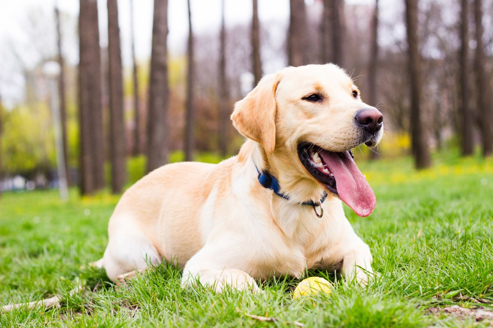
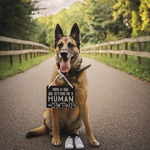
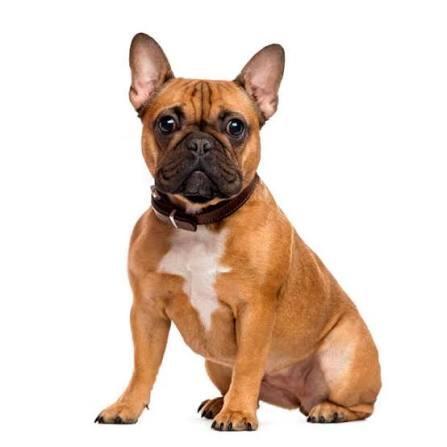
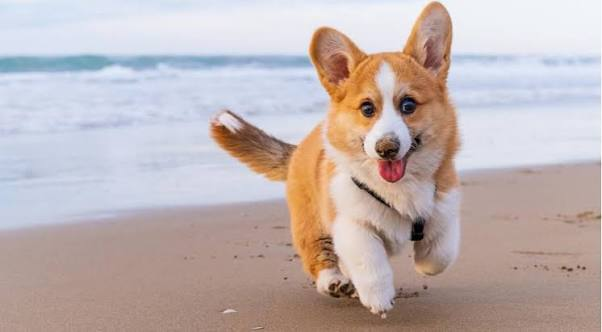

Популярні породи собак
Оберіть породу, щоб дізнатися більше:
⭐ Кавапу (Cavapoo)

Кавапу — це гібрид кавалер-кінг-чарльз-спаніеля та пуделя. Одна з найпопулярніших порід у світі завдяки своєму милому вигляду та чудовому характеру.
📋 Характеристики:
- Розмір: маленький (30-35 см у холці)
- Вага: 5-10 кг
- Шерсть: м'яка, кучерява, майже не линяє
- Колір: білий, кремовий, абрикосовий, рудий, шоколадний
- Характер: лагідний, грайливий, розумний
- Особливості: гіпоалергенний, ідеальний для сімей з дітьми
❤️ Переваги породи:
- Майже не линяють — ідеальні для алергіків
- Дуже розумні — легко навчаються командам
- Лагідні та люблячі — чудові компаньйони
- Добре ладнають з дітьми та іншими тваринами
- Компактний розмір — підходять для квартири
📝 Догляд за кавапу:
- Розчісування: 3-4 рази на тиждень
- Стрижка: кожні 2-3 місяці
- Прогулянки: 2 рази на день по 30-40 хв
- Харчування: якісний корм для маленьких порід
⭐ Кавапу — це ідеальний вибір для тих, хто шукає вірного та лагідного друга!
🟡 Лабрадор ретривер

Характеристики:
- Розмір: великий
- Характер: дружелюбний, грайливий
- Шерсть: коротка, три кольори (чорний, палевий, шоколадний)
- Особливості: ідеальний сімейний собака, любить дітей
⚫ Німецька вівчарка

Характеристики:
- Розмір: великий
- Характер: розумний, відданий
- Шерсть: середня, чорна з підпалинами
- Особливості: чудовий службовий собака, захисник
🔵 Французький бульдог

Характеристики:
- Розмір: маленький
- Характер: компаньйон, лагідний
- Шерсть: коротка, різноманітні кольори
- Особливості: ідеальний для квартири, не потребує багато активності
🟠 Коргі

Характеристики:
- Розмір: середній
- Характер: веселий, енергійний
- Шерсть: середня, руда з білими плямами
- Особливості: королівська порода, дуже розумний